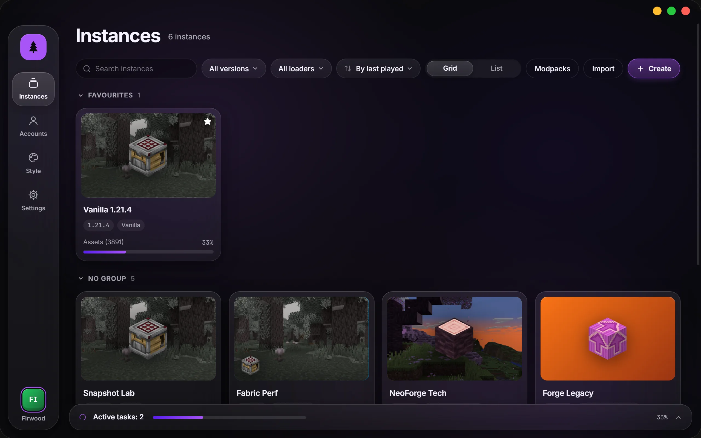
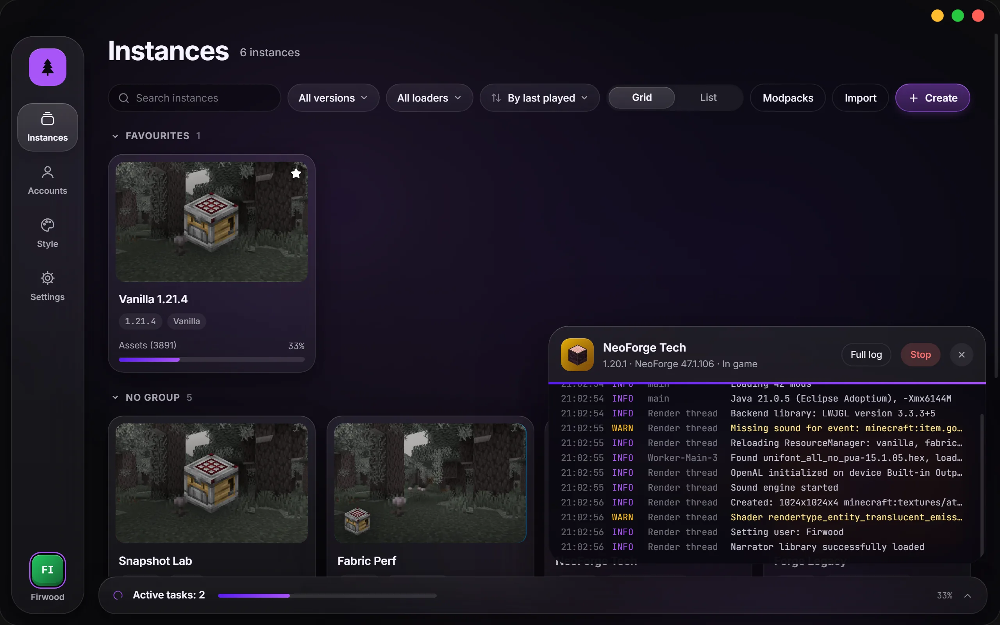
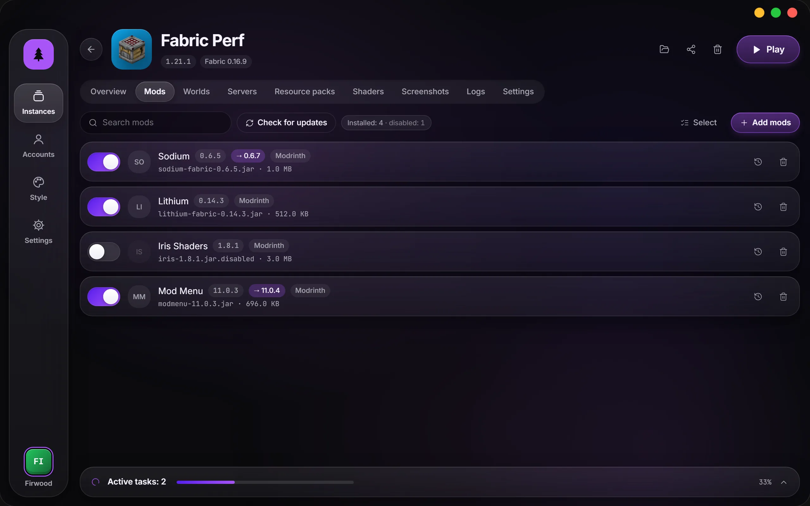
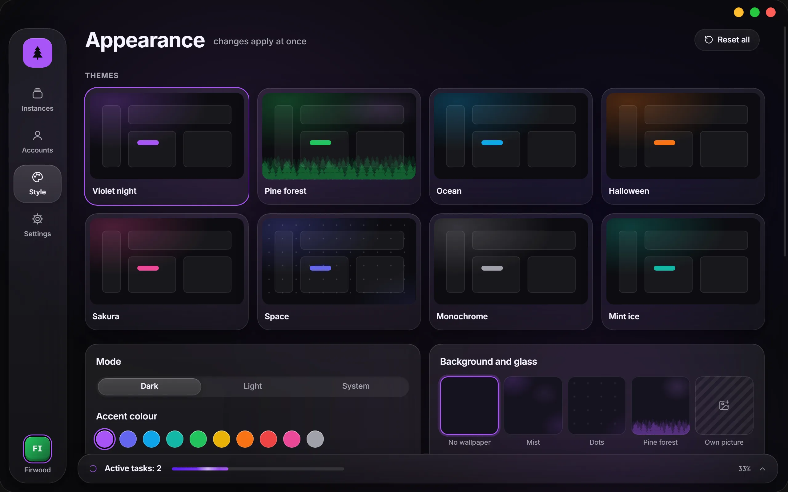

An open-source Minecraft launcher
Modded instances on Fabric, Forge, NeoForge and Quilt, mods from Modrinth and CurseForge in one click. Free, no ads, every line of code on GitHub.

All of the code is open
MIT licence: read it, build it, change it, share it. The launcher collects no statistics and shows no ads — the source code says so, not just a promise.
Rust and Tauri underneath, a React interface on top. Found a bug or want to add something? Open an issue or send a pull request.
Build from source
git clone https://github.com/perdeyvariant-hue/FirLauncher
cd FirLauncher
npm install
npm run tauri devYou need Node.js and Rust. Details in DEVELOPMENT.md.
What it does
Instances
- Every instance on its own
- Its own mods, worlds and settings — nothing leaks between versions.
- Any version, any loader
- Fabric, Quilt, Forge and NeoForge. Add or switch the loader right in the instance settings.
- Import and export
- .mrpack modpacks, CurseForge archives, MultiMC and Prism instances — just drop the file on the window.
- Desktop shortcut
- Starts the game straight away, without the launcher window.
Mods
- Modrinth and CurseForge
- Search with filters, one-click install, dependencies come along by themselves.
- Updates with changelogs
- See what changed in every newer version of a mod before you update.
- Careful modpack updates
- Your own mods and config edits stay where they are.
When something breaks
- Crashes explained
- The launcher reads the log and tells you the cause in plain words, often with a Fix button.
- Instance snapshots
- Mods, configs and the loader are saved before updates — roll back in one click.
- World backups
- Automatically before updates, and whenever you ask.
Playing
- Microsoft and offline accounts
- Offline accounts can play online too, on servers that don’t check licences.
- No Java to install
- The launcher downloads the right version itself.
- Updates itself
- New versions arrive as a button inside the launcher and are checked against a digital signature.



Download
The latest version is on the releases page.
Windows 10 and 11
macOS
Linux
Already installed? No need to download again: the launcher shows an “Update and restart” button.
Windows. The installer isn’t code-signed yet, so SmartScreen may warn you — click “More info”, then “Run anyway”.
macOS. The app isn’t notarised by Apple: right-click it and choose Open. If macOS says the file is damaged, run xattr -cr /Applications/FirLauncher.app in Terminal.
Questions
Is it really free?
Yes. FirLauncher is released under the MIT licence, with no paid features and no ads.
Do I need to own Minecraft?
To play on official servers and use your own skin, you need a Microsoft account that owns the game. An offline account works for singleplayer, LAN games and servers that don’t check licences.
Where are my instances stored?
In the launcher’s data folder: %APPDATA%\FirLauncher on Windows, ~/Library/Application Support/FirLauncher on macOS and ~/.config/FirLauncher on Linux. You can move it in the settings.
How is it different from the official launcher?
FirLauncher is made for modded play: every instance has its own mods and worlds, mods install from catalogues together with their dependencies, modpacks import and update, and when the game crashes the launcher tells you why.